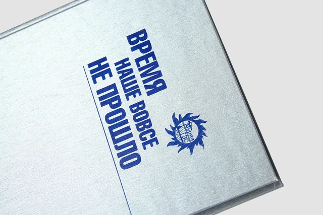
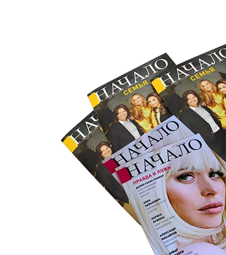
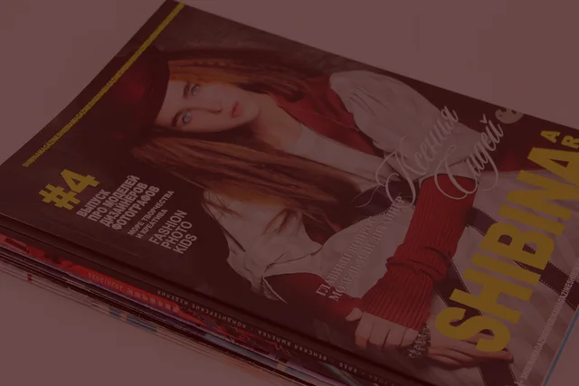
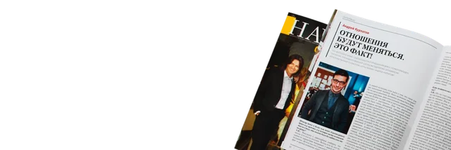
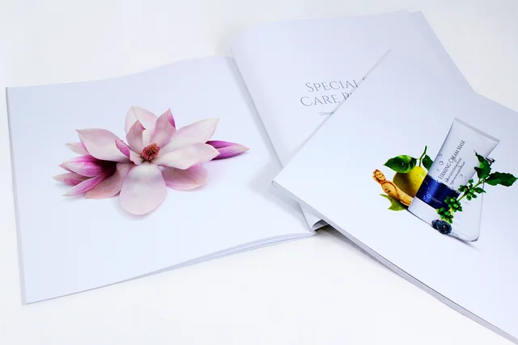
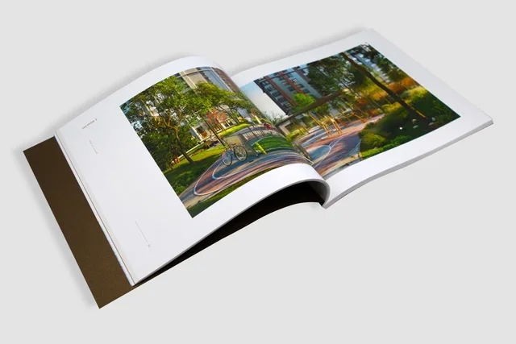
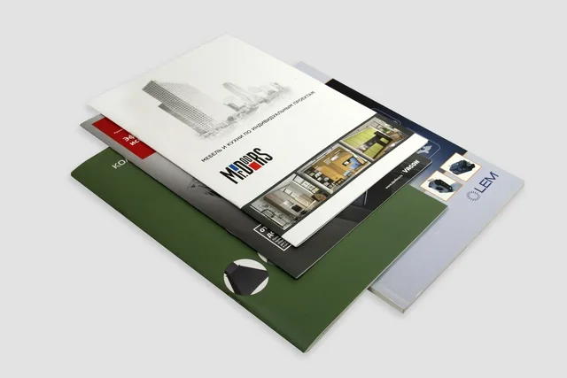
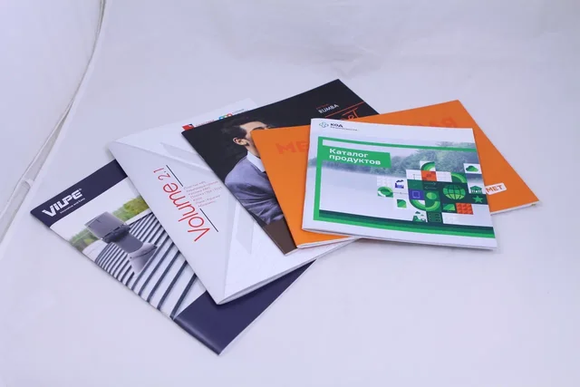

Журналы
Компания «ПК KEM» предлагает свои услуги издательским домам и представителям бизнеса.

«ПК KEM» – крупнейшая в регионе типография по изготовлению журналов на заказ.
- По-настоящему высокое качество исполнения
- Команда профессионалов с многолетним опытом работы
- Огромный спектр предоставляемых услуг, полный цикл производства
- Ваш персональный менеджер обеспечивает полное ведение и контроль заказа
- Гибкая система ценообразования — мы помогаем оптимизировать стоимость заказа путем подбора материала и учета технологических особенностей производства
Напечатаем любые журналы — корпоративные, периодические, глянцевые
Мы работаем с любыми тиражами (от 50 экз., верхний предел не ограничен) и выпускаем как периодические издания, так и рекламные материалы для корпоративных клиентов.
Журнал А4 на скобу, блок 115г обложка 170г, печать 4+4, ламинация
Журнал А4 на КБС, блок 115г обложка 170г, печать 4+4, ламинация
Виды скрепления журналов
| Тип | На скобе и евроскобе | На КБС | На ШКС |
|---|---|---|---|
| Пример | |||
| Типовые форматы | А4, А5 | А4, А5 | А4, А5 |
| Бумага обложки | 80-300 грам./кв.м | 150-300 грам./кв.м | 150-300 грам./кв.м |
| Бумага блоков | 80-170 грам./кв.м | 80-115 грам./кв.м | 80-200 грам./кв.м |
| Цветность | 5 + 5 | 5 + 5 | 5 + 5 |
| Кол-во страниц | от 8 до 96 | - | |
| Толщина корешка | - | от 3 мм | от 3 мм до 40 мм |
| Вырубка регистров | шаговая, полукруглая, панорамная | шаговая, полукруглая, панорамная | шаговая, полукруглая, панорамная |
Способы печати журналов
Печать журналов может осуществляться различными способами, в зависимости от тиража, бюджета и желаемого качества.
Офсетная печать
Офсетная печать – это традиционный метод печати, при котором используются печатные формы и офсетные машины. Этот способ особенно популярен для крупных тиражей благодаря своей экономичности и высокому качеству печати.
Преимущества
- Высокое качество печати.
- Экономически выгодно для больших тиражей.
- Возможность печати на различных типах бумаги.
- Широкий выбор цветовых решений и использование специальных красок.
- Долговечность и стойкость отпечатков.
Недостатки
- Высокие первоначальные затраты на изготовление печатных форм.
- Неэкономично для малых тиражей.
- Длительное время подготовки к печати.
Цифровая печать
Цифровая печать – это современный метод печати, который не требует изготовления печатных форм. Изображения и текст наносятся напрямую с цифрового файла на бумагу, что делает этот метод удобным и быстрым.
- Быстрая настройка и запуск печати.
- Экономически выгодно для малых и средних тиражей.
- Возможность персонализации каждого экземпляра.
- Отсутствие необходимости в изготовлении печатных форм.
- Возможность оперативного внесения изменений.
- Более высокая стоимость за экземпляр по сравнению с офсетной печатью при больших тиражах.
- Ограниченные возможности по выбору бумаги и финишной обработки.
- Потенциально меньшее качество печати по сравнению с офсетной печатью на больших тиражах.
Доставка
Вы можете забрать свой заказ самостоятельно со склада типографии, расположенного в г. Мытищи (15 км от МКАД, мкрн. пос. Пироговский, ул. Фабричная, дом 1) или из нашего офиса по адресу: Москва, Научный проезд, дом 17, Бизнес-центр «9 Акров».
Перед посещением склада в Мытищах Ваш менеджер оформит для Вас пропуск.
Также мы предоставляем услуги по доставке тиража.
Подробную информацию об условиях доставки и сроках изготовления заказа Вы можете узнать у своего личного менеджера Полиграфического комплекса «ПК КЕМ».
Какие тиражи журналов вы можете напечатать?
Мы можем изготовить как небольшие партии в несколько десятков экземпляров, так и массовые тиражи в тысячи экземпляров.
Какое минимальное количество журналов можно заказать?
Минимальный тираж для печати журналов в нашей типографии составляет 50 экземпляров. Это позволяет вам заказать небольшое количество для тестирования или узкого круга читателей.
Какие сроки выполнения заказа на печать журналов?
Сроки выполнения зависят от объема заказа и его сложности. Обычно, на печать и финишную обработку уходит от 3 до 7 рабочих дней. Точные сроки будут уточнены вашим личным менеджером после согласования всех деталей.
Могу ли я выбрать бумагу для печати журнала?
Да, вы можете выбрать тип и плотность бумаги для вашего журнала. Мы предлагаем широкий ассортимент бумаги: глянцевую, матовую, офсетную и другие виды. Ваш менеджер поможет подобрать оптимальный вариант.
Предоставляете ли вы услуги по дизайну и верстке журналов?
Да, в нашей типографии работают профессиональные дизайнеры и верстальщики, которые могут помочь вам создать макет журнала с нуля или внести правки в существующий дизайн.
Возможна ли персонализация журналов?
Да, при цифровой печати мы можем персонализировать каждый экземпляр журнала. Это может быть полезно для создания уникальных выпусков для определенной аудитории или для маркетинговых акций.
Предоставляете ли вы образцы печати?
Да, мы можем предоставить образцы нашей продукции для ознакомления с качеством печати и материалами. Вы можете запросить их у вашего менеджера или посетить наш офис.
Материалы и образцы
 Детские книги
Детские книги  Детские книги
Детские книги  Детские книги
Детские книги 

Детские книги печать каталогов на кбс
печать каталогов на кбс  печать каталогов на шкс
печать каталогов на шкс  печать каталогов на скобе
печать каталогов на скобе 

Журналы

Журналы

Журналы

Каталог с предметной фотографией

Журналы

Журналы

Брошюровка на металлическую скобу